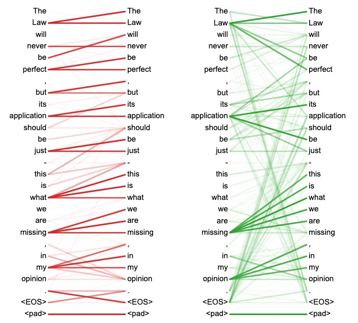

Writing Presidential Farewells with GPT-2
 Photo by
John Bakator
on
Unsplash
Photo by
John Bakator
on
Unsplash
Hello! This post is a final project write-up for the class The American Presidents and the Western Tradition (CLAS1120U) at Brown University. I assume no computer science background when I present content on this page.
Intro
GPT-2, which stands for Generative Pretrained Transformer 2, is a cutting-edge English language model developed and released by research group OpenAI in 2019. This model generates realistic passages of English text given any arbitrary prompt. In fact, GPT-2’s output could be so convincing that the model’s creators declined to publish the actual model until months after the original paper for fear that it would be used to overwhelm social media with hard-to-filter disinformation and propaganda.
Now we can find many fun projects on the internet that use the power of GPT-2:
- This Word Does not Exist: a random dictionary entry generator that creates fake English words and assigns them fake (but not unreasonable) definitions
- AI Dungeon: an open-world choose-your-adventure style game that generates a plot on the fly according to typed responses from players
Of course, there exist less innocent applications of GPT-2, but that’s not what I want to look at here.
The purpose of this project is to use GPT-2 to analyze and generate farewell speeches for several U.S. Presidents and find which tones, anecdotes, and syntactic details the model finds significant.
We will use the farewell addresses of the following presidents:
- Andrew Jackson – 1837
- Richard Nixon (farewell to White House staff) – 1974
- Ronald Reagan – 1989
How GPT-2 Works
GPT-2 is a transformer-based language model. This means that the way it generates each word of its output depends primarily on the presence of each word in the input or prompt. In terms of basic math, you can think of this as each word of the output is determined by a weighted sum of the input words (and we have a way to represent the concept of each word as a series of numbers). This concept is called attention because each of the words of the output pay attention to each of the words of the input. Transformers are models that almost entirely rely on attention.
Below is a visualization of attention heads presented in the paper Attention Is All You Need. The opacities of the lines correspond to the amount of “attention” each attention head has on the other words.

The full architecture of GPT-2 is a bit more complicated than what’s outlined here, but it is essentially a massively scaled-up version of a transformer model.
Here’s an example of text generated by GPT-2 from OpenAI’s website. The model was given a writing prompt about a scientist discovering unicorns in the Andes Mountains.
The scientist named the population, after their distinctive horn, Ovid’s Unicorn. These four-horned, silver-white unicorns were previously unknown to science.
Now, after almost two centuries, the mystery of what sparked this odd phenomenon is finally solved.
Dr. Jorge Perez, an evolutionary biologist from the University of La Paz, and several companions, were exploring the Andes Mountains when they found a small valley, with no other animals or humans. Perez noticed that the valley had what appeared to be a natural fountain, surrounded by two peaks of rock and silver snow.
Note that GPT-2 did not confuse pronouns like ’this’ and remembered the name of the scientist across different sentences. Although these details seem trivial to native English speakers, older language models that have used architectures like LSTMs (long short term memory) struggle to maintain a cohesive narrative across multiple sentences. GPT-2’s impressive capacity to “understand” the English language comes from its 1.5 billion trainable parameters and the 40GB of website text that it was trained on.
Applying GPT-2
GPT-2 generates output one word at a time using the preceding words as input, similar to how a smartphone’s virtual keyboard can suggest the next word you want to type. The model suggests each output word using the trained knowledge represented by its 1.5 billion trainable parameters.
For this project, I can tweak these parameters so they they imitate a specific writing style by training GPT-2 on a text example using the writing style I want it to learn.
Here is a general overview of the training process:
- Get an output from GPT-2
- Append the output to the text preceding it and compare the result to the training text that we want to learn about
- Slightly adjust GPT-2’s parameters so that the next output will be more similar to the training text than the last output
- Repeat steps 1-3 until we (the humans) decide that GPT-2 has learned enough
This process is volatile and stochastic – we will not get the same results from every training session. If we’re not careful, it’s easy for the model to do things we don’t want – like memorizing and outputting the training text word-for-word.
Additionally, updating the 1.5 billion parameters of GPT-2 requires a lot computation power and time, so I used a Google Colaboratory document with a GPU (graphics processing unit) to accelerate the training process.
For more technical details on how I fine-tuned GPT-2, I recommending reading through Max Woolf’s excellent guide.
When doing this project, I trained GPT-2 separately on each presidential farewell for a short amount of time (measured in terms of number of times we perform the process loop above). The idea was for GPT-2 to begin learning parts the writing style without having enough time to memorize the farewells. Thus, whatever these customized GPT-2 models learned was likely to be more characteristic of the training texts, and we can parse these learned characteristics through the model outputs.
So, without further ado, let’s look at some GPT-2 output!
Results
Note that the passages presented here are cherry-picked because performing an accurate statistical analsysis is out of scope for this project, but we can still draw insights from these paragraphs. The themes and structures that make it through to these generated texts are likely the most important components of their respective source speeches.
None of these generated farewells would pass as human-written. This is expected because:
- The additional training data that I gave GPT-2 data is tiny – I would need several books worth of training material to realize the full power of the model
- GPT-2 has several differently-sized variants – I chose to use the smallest, least powerful version (124M) for performance reasons (the larger ones would have taken hours to fine-tune)
When calling on GPT-2 to generate each of these speeches, I gave them following starting prompt: “Farewell”
Jackson’s Farewell (originally delivered on 1837)
Farewell, my friend and fellow-citizens, to the present day, and to the new and improved condition of our country.
Much like the original farewell, this speech appeals to the paternal figure of Washington as an unambiguous source of authority:
We have now passed to your present address by General Washington, who has at length left us a message of peace. He has warned us, with your most worthy counsels, that the strongest Union is the one to which we should be ready to sacrifice our lives for its preservation. The seeds of revolution have already been sown in your bosoms, and the warning counsels of his countrymen have been taken from him. He has had us drawn into a conflict, and he has blasted us from our high cities and thrown us upon the new and exciting pages of history, warning us of the danger and the need of perseverance and of securing to every quarter of the Union the blessings of peace. He has spared no life by his example or by his example’s sake, and we are prepared to submit to his authority and to stand ready to be his protectors, if need be, against his will. He has always known that a Union armed with arms would soon be drawn out of the Union; and since he has given no consideration to the eternal consequences of his decision, we are assured that he will not grant it.
The uncertainty around the stability of the U.S. sticks around:
The public anxiety over the Union has been so great that the General Government has ceased to be the true sphere of public action; and there is no longer a need for any government to govern it. The people of every quarter of the country have already felt their rights laid before them, and their rights have been faithfully sustained in the election of our new President.
GPT-2 learns well Jackson’s passionate speech about the banking and currency systems of the U.S.:
But we are now in the midst of a severe attack on our institutions in the several cities and on our commerce. The great cities and towns in our own cities, with their high taxes and burdens, have been turned into spoliation-demons, and the citizens of other cities and tribes are now compelled with harsh dissensions to become the guardians of a new Federal Government. The commercial establishments in these cities depend almost entirely on gold and silver, and a growing number of such privileges and advantages are now given to us in the currency of paper. The currency is the currency of convenience, and since gold and silver are found exclusively in the cities, and the money circulating in these cities is readily circulating in other cities, the doors of which we have been intrusted have been wide open for the corporations to obtain a share of the currency and to obtain for themselves the desirable advantages of money. [See note to Millennial Star, p. 78.]
There are many warnings here of the potential perils that may overtake the American people’s government, similar to the numerous warnings in Jackson’s original speech:
These evils are constantly at work in every part of the country, and the corporations have no choice but to inflict them upon us. With increasing numbers they are endeavoring to influence the Government into giving too much gold to every city-house and to place too great a value upon money. Under the influence of these schemes, or the plans advanced by the corporations, the Government is endeavoring to reform the currency in order to obtain for the corporations a share of the currency, and to secure to them a share of the currency a share of the wealth of the country, if they may be permitted to obtain it. From these schemes of injustice and corruption are continually thrown upon our public institutions, and the suggestions of these corporations have generated serious and resounding alarm in the politicians of every city and district. The consequences of these schemes must not be forgotten, for they will soon be discovered and crushed.
These severe measures and the constant encouragement given to them have impressed upon us the deep anxiety and danger which pervaded before the Revolution, and we are come to the hour when the warning cry of the General Government will be overthrown. The corporations will have succeeded in obtaining a share of the currency by taking away from the people a share of the money power, and this evil will now be felt in every part of the country.
In the cities especially where the corporations have concentrated their operations, the real evils of the present situation are continually at work. The multitude of idle speculators and property speculators in every quarter of the country are endeavoring to impost upon the public treasury a surplus of money in order to obtain for themselves a share of the money power; and from the number of cities in the several States, with their high taxes and burdens, and the high price of goods, the corporations are prepared to sacrifice a large part of the income of the State into the hands of the rich and powerful, and to collect a surplus for themselves by taxing the people at large. These corporations are engaged in a most article of commerce, and they are prepared to sacrifice a portion of the surplus revenue for their own gain; but we are told that they have no choice but to pay the heavy taxes imposed on them, as their revenue will be wholly used for their own benefit; and the heavy debts they are now in debt will soon become more and more severe. The temptation is too great for vain hope, and the time has come when the people in every quarter of the country shall be permitted to be
This will become obvious, but the difference in syntax and structure between this generated speech and the newer farewells is stark. Jackson has fewer, yet significantly longer and complex paragraphs. The general vocabulary used also becomes simpler in the recent speeches.
Nixon’s Farewell (originally delivered on 1974)
Farewell, my boys and girls.
Nixon’s message that he was proud of the people of his administration shines through here:
I want you to know that, as I said, I am proud of this Cabinet. I am proud of all the members who have served in our Cabinet. I am proud of our sub-Cabinet. I am proud of our White House Staff. We are grateful to all who have supported us or assisted us in our many missions. And most important, we are proud of this House for what it has done for many years: Ordered houses, and all houses, of the United States Congress.
Here’s a hint of Nixon’s discussion on the greatness of the White House (both the people and the building):
I was proud of it. I am proud of it for being the largest house in the world, and I am proud of all the members and staffs who have served in our Cabinet.
Repetition of a simple phrase as a rhetorical device; this is more prominent in speeches of the television era:
I am proud of our sub-Cabinet. I am proud of our sub-Cabinet. and I am proud of our White House Staff.
I am proud of our White House Staff. We are proud of our White House Staff.
We have been generous. We have been generous in sacrifice. And most important, we are as proud as we are of it—5 1/2 years, 92% FFA, 59% CFP, 58% AAA, 57% EP, 55% MT, 54% SA, 53% AF, 2% MT, 1% AF, 1% MT, 0% NA
The most unique part of Nixon’s Farewell was the theme of admitting mistakes (i.e. Watergate), and GTP-2 does not miss this:
Mistakes, yes. But for personal gain, never. And I only wish that I were a wealthy man-at the present time, I have got to find a way to pay my taxes–[laughter]–and if I were, I would like to recompense you for the sacrifices that all of you have made to serve in government.
Nixon’s praise of the U.S.’s strength and message of the importance of passing the torch to younger generations are present here:
But you are getting something in government-and I want you to tell this to your children, and I hope the Nation’s children will hear it, too–something in government service that is far more important than money. It is the cause of making this the greatest nation in the world, the leader of the world, because without our leadership it can’t possibly grow, it can’t possibly win, it can’t possibly win only because of our people.
We have been generous. We have been generous in sacrifice.
And, most important, we are as proud as we are of it—5 1/2 years, 92% FFA, 59% FPA, 59% A, B, and C, natch?
The theme of admitting mistakes is so strong that it appears again:
Mistakes, yes. But for personal gain, never. And I only wish that I were a wealthy man-at the present time, I have got to find a way to pay my taxes–[laughter]–and if I were, I would like to recompense you for the sacrifices that all of you have made to serve in government.
Reagan’s Farewell (originally delivered on 1989)
Before we continue here, I will warn you that the more modern farewells may be more obviously affected by the bias within GPT-2’s original training dataset. More details are in the conclusion section.
Below is perhaps indicative of the more informal language used in modern political speeches:
Farewell, people. You’ve been living under a rock.
I’m leaving with a big smile on my face. And a big kiss on the cheek.
GPT-2 touches on strong Reagan-era American nationalism:
We’ve met so many great victories. We Americans. And yet, the past 8 years have been filled with uncertainty, mistrust, and confusion. We Americans have lost count of the number of our kind who have sought to influence an increasingly important national question.
I know this is some personal frustration, but we Americans know it’s true. Our view on foreign affairs has always been the same. Our program has always been the same: Deal with adversity, and build strong institutions – the United States Congress.
We the people have always been more ready to accept change and to count on you. President Truman and Congress have been remarkable teachers.
We the People have always been more ready to count on our influence. And continue to count on our count.
Here is a reference to Reagan’s famous tax cuts, which he brags about in the original farewell:
We cut taxes, and the programs that limited the government. We cut the bloated, the administrative. We dried up the American superstate. We crumbled the Communist-controlled Asia.
Reagan’s points on reducing bureaucratic overhead also makes it through:
We’ve cut the bloated, the administrative, and we’ve crumbled the superstate’s defenses. It now functions like a show, intrigue, and war. But restraint requires smart diplomacy and long-term planning.
We May Receive Midsummaries from the Russian and American Distinguished Visits
This section may seem odd, but it corresponds to Reagan’s anecdote about travelling through Arbat St. in Moscow and seeing the Russian citizens greet him:
We are greatly honored to hold the 30th anniversary of our Birth Day together with the distinguished Visitor Service Medals. As we enter the city limits, traffic is slow and plodding; on both sides of the street are Russian-owned shops and businesses.
A few years ago, as the workers of Moscow were preparing to leave, a car plowed through the crowd, killing one person and wounding 50. Three days later, another car hit a crowd of people in the crowd, and a Russian national who was visiting the home of his Russian-born niece was killed.
The family has been trying all summer to get an explanation from the driver of the car. But on the morning of my visit, he summoned the national guard and told them to get out of the way immediately. The guard was right there, and he and the driver seemed to know it.
A few days later, the family got a call that another car was blocking traffic on I-95. The driver of the Russian car was hit in the back and was taken to a local hospital. Our thoughts are with the family at this difficult time.
GPT-2 remembers Reagan’s proud references to America’s political and diplomatic victories over the Soviet Union (including Soviet withdrawal from Afghanistan):
I want to return to Washington this week and begin the difficult process of determined and thorough review of our action in Afghanistan. The review will continue through to Christmas. But first, I want to wish my family and the Washington community a happy 2012.
A Message From the President:
My family and many in the Washington community celebrate the 40th anniversary of the victory over the Soviet Union. I want to take a moment here today to truly take a moment and appreciate the hard work of the people of Afghanistan.
It took a miracle to bring about an economic miracle in this nation. But we brought about an economic miracle that brought about hope and prosperity. And hope is again extended to the people of Afghanistan.
Here, I think GPT-2’s external bias overpowers the text, so you can probably skip past this part of the farewell:
I want to begin this little review with a warning. Some people are very nervous. I’ve known people who have been nervous. And yet again, my family and I have been very, very, very, very, nervous.
Some people are very nervous. And yet again, my family and I have been very, very, very, very, nervous.
People react to economic developments with confusion and anger. But what few realize is that this is a reaction to change and opportunity. The people have changed. And they’ve changed very, very, very fast.
People are leaving their homes and moving to cities and towns all across America. Not all are Happy Allies. Some are Communists, some are New Righters. Some are Wall Street fixers and other assorted rabble-rouser types who are looking for work in the entertainment industry.
Well, I’ve got to admit, I was a bit of a New Right nut back in the day. And I’m proud to say I was one of the few who actually got your hopes up. Well, I’ve got to admit, I was a bit of a New Right nut back in the day. And I’m proud to say I was a bit of a New Right nut back in the day.
The fact is, I wasn’t really a big New Right guy back in the day. I was a small-town Socialist, and I was happy to be part of the big movement. But I wasn’t a big New Right guy when President Kennedy came along. I was a small-town Social Democrat who wanted to see the big government dismantled and the people brought into it.
I wasn’t a big New Right
Conclusion
GPT-2, as expected, picked up on the major themes of each of the original farewells. It also learned the appropriate vocabularies (relatively speaking) and paragraph breaks. In a way, we can think of GPT-2 as a summarizer of what it sees, though we also must be wary of bias and noise from external sources.
Unfortunately, a significant amount of Trump rhetoric contaminates the generated speeches for the newer farewells. I opted to exclude the most extreme cases from this post: for every generated text you see here, there were at least 6 other candidates that I rejected. This bias is likely because of GPT-2’s original training dataset (which was scraped from various websites after the 2016 American election) and also due to the similaries in the vocabulary/structure of modern political speeches.
You can play around with my code here.
Bloopers
Now that you’ve read to the end, here are some … interesting … GPT-2 passages out of context!
Nixon
This was likely derived from when Nixon spoke of how the White House was the best house in the world in his speech.
Farewell, for I, the illustrious leader of the Senate, farewell this house. This house is no better than a great house. It is the best house.
I have no clue why this was generated:
I recall those days. And I remember them well. The thought of them being made President, and the thought being repeated many times, many times, is an example that every man or woman for that matter, should keep in mind. And I think of my two boys, and I have known each and every one of them, and each and only one, did he or she gain or lose in the intelligence required to be a man or a woman in the first place.
And And And And And
And And And And And And And And And And And And And And And And And And And And And And And And And And And And And And And And And And And And And And And And And And And And And And And And And And And And And And And And And And And And And And And And And And And And And And And And And And And And And And And And And And And And And And And And And And And And And And And And As And Restated By The Lord: 1. I have read all of the scriptures–all of them, if I possibly can, and I have been generous, and I have been kind to those who have been in the Church.
I have read all the Church’s books
Reagan
Not sure what this is:
He is directing the production, distribution, and transportation of telegrams and telegramses warning of new arrivals and requesting that they leave immediately.
This may have been generated from the part of Reagan’s speech where he talks about economic summits in Canada.
I know some of you are wondering where I come from.
Well, I’m from Canada.
I grew up in a small, rural area.
I remember our first meeting a few years ago.
This one is just off-topic:
And yet, every once in a while something special happens.
Something that we called a “twist.”
Something we called a “direct hit.”
Something we called “lockstep.”
Something we called “insomniacal.”
And we did it again at the Oscars.
We won an Oscar.
We went on to win an Academy Award.
And we’re still pretty much the same.
Perhaps the temperature was a little high? (Temperature is a text generation parameter: the higher it is, the more “creative” the output becomes.)
communist
assassin
assassin
assassin
assassin
assassin
assassin
assassin
assassin
assassin
assassin
assassin
assassin
[this goes on for 30 more lines…]
Raymond Cao
Software Enginner & Tech Enthusiast
Software engineer and tech geek who loves to dive down various rabbit holes.